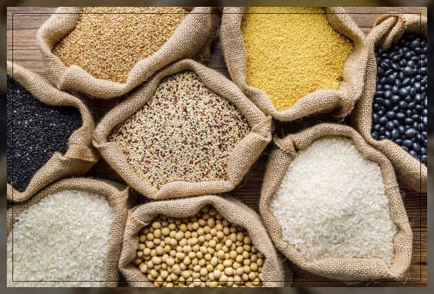
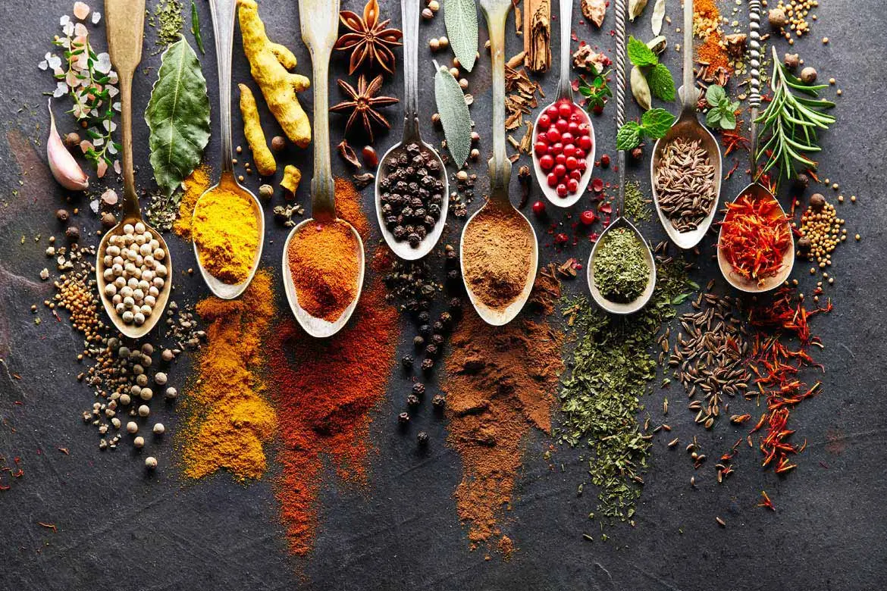

Agriculture & Ingredients
Staple Crops
India's agriculture is renowned for its diverse staple crops including rice, wheat, and millets, forming the basis of the everyday diet. These grains are not just food sources but are ingrained in the cultural fabric of the country.

Spices & Herbs
India is the largest producer and exporter of spices worldwide. From turmeric to cardamom, Indian spices are prized for their flavors, colors, and medicinal properties, pivotal in crafting the unique tastes of Indian cuisine.

Fruits & Vegetables
India's climate supports a wide range of fruits and vegetables, contributing significantly to its cuisine and economy. Mangoes, brinjals, and leafy greens are among the plethora of produce that enriches the Indian diet.